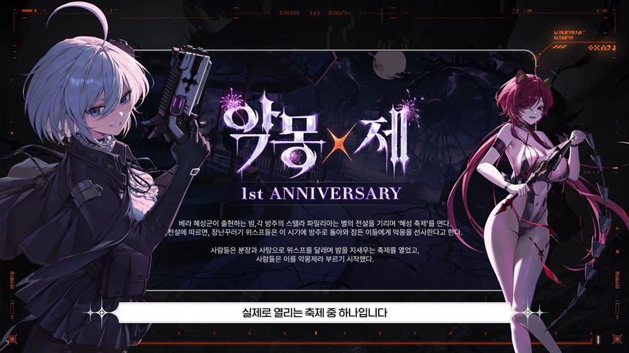
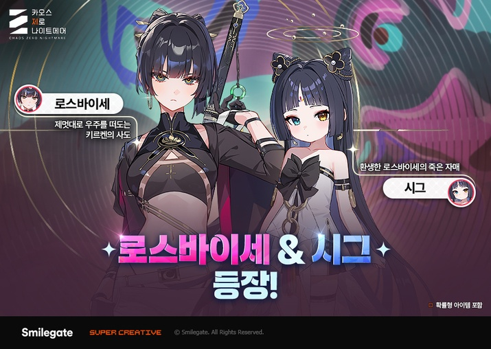
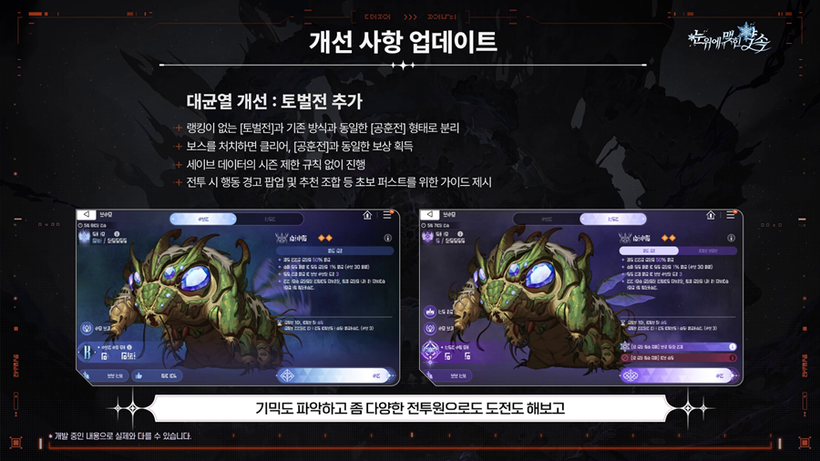
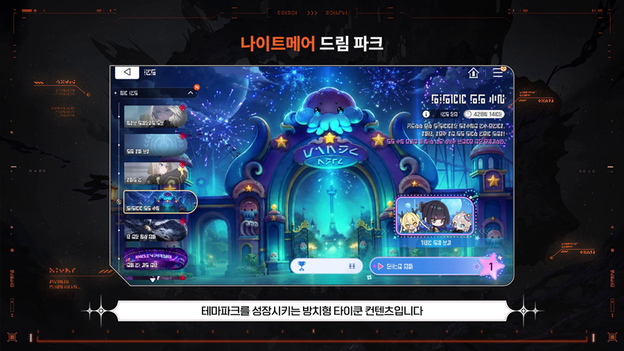

카오스제로나이트메어 1주년 이벤트 악몽제 정리, 카제나 로스바이세 모집과 보상 총정리
이 게임은 확률형 아이템을 포함하고 있습니다.
카오스제로나이트메어(카제나)가 1주년을 맞아 10월 21일 시즌5 업데이트와 함께 1주년 이벤트 악몽제를 열었어요. 신규 전투원 로스바이세에 신규 스토리, 보상까지 한꺼번에 공개돼서 소식만 훑어봐도 기대가 돼요~
이번 글은 공개된 내용을 보도 기준으로 정리했는데요, 이벤트 보상부터 로스바이세, 스토리, 드림파크까지 차례로 짚어 볼게요. 공식 소식은 카오스 제로 나이트메어 공식 커뮤니티에 올라와 있고, 영상으로 먼저 보고 싶으시면 공식 영상 '1주년 악몽제 주요 내용 총정리'(유튜브 바로가기)도 있답니다.

악몽제 1주년 소개 화면이에요. 혜성 축제 콘셉트라 분위기부터 물씬 나죠?
사진제공: 스마일게이트(보도자료) · 이미지 출처: 게임인사이트
카오스제로나이트메어 1주년 악몽제는 언제까지 하나요?
카오스제로나이트메어 1주년 업데이트 악몽제는 10월 21일 시즌5 '눈 위에 맺힌 약속'과 함께 시작했고, 기념 이벤트는 12월 2일까지 이어집니다. 시즌5는 은하계 재해를 다루는 다섯 번째 시즌이라고 해요. 기간이 6주 남짓이라 천천히 챙겨도 됩니다.
| 날짜 | 내용 |
|---|---|
| 10월 21일 | 시즌5 업데이트·악몽제 시작, 로스바이세 모집 시작 |
| 12월 2일 | 악몽제 기념 이벤트 종료, 로스바이세 모집 종료(보도 기준) |
| 12월 23일 | 나이트메어 드림파크 종료(10월 21일부터 진행) |
악몽제 이벤트 보상은 뭘 받을 수 있나요?
악몽제 보상은 계정 레벨 10 이상이면 전원이 받는 선택권·크리스탈·무료 구출이 기본이고, 여기에 출석 보상이 더해져요.
- 5성 전투원 선택권 + 파트너 선택권 : 계정 레벨 10 이상 전원
- 크리스탈 1,600개 : 계정 레벨 10 이상 전원
- 무료 구출 : 하루 10회씩 7일, 총 70회
- 출석 보상 : 구출 앵커 20개 등
이름 그대로 '선택권'이라 내 취향대로 고를 수 있어요. 무료 구출 70회까지 더해지니 이벤트만 챙겨도 손에 쥐는 게 꽤 많아요. 이 밖의 세부 보상은 공식 커뮤니티 공지 기준으로 보시는 게 가장 정확해요.
신규 전투원 로스바이세는 어떤 캐릭터인가요?
로스바이세는 정의 속성 스트라이커 클래스의 시즈널 전투원이고, 순환의 여신 키르켄의 사도이면서 신에게 적의를 품은 캐릭터예요. 파트너는 '시그'이고요.

공개된 소개 이미지에는 로스바이세가 '제멋대로 우주를 떠도는 키르켄의 사도', 시그가 '환생한 로스바이세의 죽은 자매'로 적혀 있어요.
사진제공: 스마일게이트(보도자료) · 이미지 출처: 게임메카
핵심 카드는 '명멸검'이에요. 턴이 시작되면 '편린: 명'과 '편린: 암'으로 나뉘어 손패 양 끝에 놓이고, 조건을 채우면 하나로 합쳐져 강력한 일격이 된다고 해요. 신규 키워드 '명암'도 함께 등장하고요. 로스바이세의 디자인과 무기는 오방색, 흑백의 대비, 재앙을 막는 사인검에서 모티브를 따왔다고 하네요. 다만 보도에는 수치가 나오지 않았어요.
시즌5 신규 스토리는 어떤 내용인가요?
시즌5 '눈 위에 맺힌 약속'은 정체불명의 재앙으로 고립된 함장 일행이 신규 카오스 '천상의 방벽'에 도착하면서 시작돼요. 무대는 추락한 방주 프론트노바가 있는 극지 행성 니발리스이고, 시즌 보스는 '심판의 대행자 발트라우테'예요. 발트라우테는 디알로스의 의지를 대행하는 존재로 소개돼요. 보스 전용 컷인과 테마곡도 준비됐다고 해요. 로스바이세의 과거 이야기는 풀 보이스 '트라우마 코드'로 공개됐고, 신들과 카오스의 관계 같은 세계관의 비밀도 본격적으로 풀린다고 해요.
대균열 토벌전과 이번 시스템 개선은 뭐가 바뀌나요?
대균열은 랭킹이 없는 '토벌전'과 순위를 겨루는 '공훈전' 두 갈래로 나뉘는데요, 항목별로 정리하면 이래요.
- 토벌전 : 랭킹 없이 보스를 처치하면 클리어, 공훈전과 같은 보상을 받아요
- 공훈전 : 기존 대균열 방식 그대로 순위를 겨뤄요
- 전투 가이드 : 보스 행동을 미리 알려 주는 경고 팝업과 추천 조합이 함께 제공돼요

대균열 토벌전 안내 화면이에요. 개발 중인 내용이라 실제와 다를 수 있다고 적혀 있어요.
사진제공: 스마일게이트(보도자료) · 이미지 출처: 게임인사이트
전투 가이드가 붙은 덕에 처음 도전하는 분도 부담이 덜하겠네요. 이 밖에도 업데이트 시스템이 여럿 풀렸어요.
- 카드 스킨 : 정식 도입, '밤하늘의 초대' 카드팩 전투원 16종
- 스페셜 등급 외출복 : 로스바이세부터 시작, 3D 모델링과 컷인, 전용 보이스 46종이 붙어요
- 파트너 탐사 패시브 : 4성 2종, 5성 3종
- 그 밖의 변화 : 기억의 조각 '재구성', 주간 임무 코어 보상, 칭호와 초상화 테두리 추가
나이트메어 드림파크는 어떤 콘텐츠인가요?
나이트메어 드림파크는 테마파크를 키워 가는 방치형 타이쿤 미니게임이에요. 시설을 배치해 방문한 전투원의 만족도를 올리고 수익을 모으는 방식이고, 보상으로 크리스탈과 성장 재화, 한정 이모티콘, 신 번뜩임 선택 코어가 준비돼 있어요. 보도에는 수량이 나오지 않았어요. 가상 수익의 일부가 스마일게이트 희망스튜디오와 연계한 결식아동 기부로 이어진다는 점도 따뜻하네요.

테마파크를 성장시키는 방치형 타이쿤 콘텐츠라고 소개돼요.
사진제공: 스마일게이트(보도자료) · 이미지 출처: 게임인사이트
악몽제는 뭐부터 챙기면 좋을까요?
상황에 따라 이렇게 나눠 보면 편해요.
- 시간이 넉넉하지 않다면 : 날짜가 걸린 무료 구출부터 챙기는 쪽이 이득이에요
- 스토리가 궁금하다면 : 시즌 시작과 함께 열린 서사라서 '천상의 방벽' 도착 장면부터 따라가면 흐름이 이어져요
- 느긋하게 즐기고 싶다면 : 드림파크가 12월 23일까지로 일정 중 가장 길어서, 방치형답게 틈틈이 돌보기 좋아요
자주 묻는 질문
Q. 로스바이세 다음 신규 전투원은 누구인가요?
11월 11일에 정의 속성 컨트롤러 블레이즈벨이 실레이마 세력의 첫 전투원으로 나오고, 12월 2일에는 결속 키워드를 쓰는 달리아가 이어져요. 12월 중에는 2인 협력으로 즐기는 첫 멀티 콘텐츠 '연합작전 코어 브레이크'도 예정돼 있다고 해요.
Q. 악몽제 쇼케이스는 언제 했나요?
10월 10일에 '1주년 악몽제 쇼케이스'가 진행됐고, 유튜브 다시보기로 볼 수 있어요.
카오스제로나이트메어 악몽제 정리
보상, 신규 전투원, 신규 스토리, 시스템 개선이 한 번에 겹친 업데이트라 한동안 쉬었던 분들도 눈여겨볼 만해요. 보도 기준 로스바이세 모집도 12월 2일 점검 전까지로 알려졌어요. 저는 보도에 수치가 나오지 않은 '명멸검'이 실제로 어떻게 쓰일지가 제일 궁금하네요~
참고한 곳
· 카오스 제로 나이트메어 공식 커뮤니티(스토브)
· 공식 영상 - 1주년 악몽제 주요 내용 총정리
· 공식 영상 - 1주년 악몽제 쇼케이스
· 보도 참고
· 보도 참고
2026.10.22 기준
✔ 카오스 제로 나이트메어 같이 보기 좋은 내용
· 카제나 사전 플레이테스트 후기 카오스 제로 나이트메어 CBT
· 카오스 제로 나이트메어 사전 플레이 테스트 모집 카제나 출시일 정보